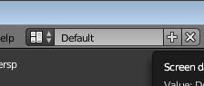
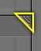

User Interface
Splash Screen
Screens
Areas
Splitting and Joining
Area Split Widget
Duplicate Area into new Window
Menu: View ‣ Duplicate Area into new Window
Toggle Maximize Area
Menu: View ‣ Toggle Maximize Area Hotkey: Ctrl-Up, Shift-SpacebarToggle Fullscreen Area
Menu: View ‣ Toggle Fullscreen Area Hotkey: Alt-F10
Tabs & Panels
Tabs are overlapping sections in the user interface. The Tabs header can be vertical (Tool Shelf) or horizontal (Properties Editor, User Preferences).
Switching/Cycling
Vertical tabs can be switched with the Wheel within the tab header and Ctrl-Wheel changes tabs from anywhere in the region.
You can also cycling th
rough tabs with Ctrl-Tab and Shift-Ctrl-Tab.Panels
Collapsing and Expanding
A triangle on the left of the title shows the expanded (▼) and collapsed (►) state of the panel.
A click with the LMB on the panel header expands or collapses it.
Pressing A expand/collapses the panel under the mouse pointer.
A Ctrl-LMB click on the header of a specific panel will collapse all other panels and make this the only expanded one.
Dragging with LMB over the headers will expand or collapse many at once.
Position
You can change the position of a panel within its region by clicking and dragging it with the LMB on the grip widget (::::) in the upper right corner.
Pinning
Often it is desirable to view panels from different tabs at the same time. This has been solved by making panels pinnable.
A pinned panel remains visible regardless of which tab has been selected. You can pin a panel by Shift clicking its header, or by RMB clicking on the header and choosing Pin in the context menu.
In the image shown to the right, is an example of the Mesh Options pinned in the tools tab.
Zoom
The zoom factor of a whole region with panels can be changed by Ctrl-MMB clicking and moving the mouse anywhere within that region or use the NumpadPlus and NumpadMinus to zoom in and out the contents. Pressing Home (Show All) will reset the zooming at the screen/panel focused by the mouse pointer.
Alignment
The alignment of the panels in the Properties Editor can be changed between vertical and horizontal. To do this click with RMB somewhere within the main region of the Properties Editor and choose either Horizontal or Vertical from the appearing menu. Keep in mind though that the panels are optimized for vertical alignment.
Interface Controls
Buttons
Operation Buttons
Operation button.
These are buttons that perform an operation when clicked with LMB. They can be identified by their gray color in the default color scheme.
Text Fields & Search Fields
Text and Search.
Text fields have a light gray background and a darker outline. They hold text strings, and provide the means to edit it by standard text editing. Search fields show a magnifying glass icon on the left side. Start typing in the field to search. Only items with matching text will be shown.
For text fields with an icon and gray pop-up, see Data ID.
Color Buttons
Color buttons.
Without and with alpha.
The color button stores a color value shown in its background. LMB color buttons opens the Color Picker. Color buttons with an alpha channel are divided in half: on the left the color is shown without an alpha channel and on the right the color with an alpha channel drawn over a checker pattern. Colors can be dragged and dropped.
Menus
Toggle & Radio Buttons
Number Buttons
Eyedropper
Data-Block Menu
List Views & Presets
Color Picker
Color Ramp Widget
Curve Widget
Operator Search
Common Shortcuts
Tools
| UV Editing: | The default layout used by Blender for new files. Useful for modeling new objects. | Макет по умолчанию, используемый Blender для новых файлов. Полезно для моделирования новых объектов. |
| Default | Flattening a projection of an object mesh in 2D to control how a texture maps to the surface. | Выравнивание проекции сетки объекта в 2D для управления отображением текстуры на поверхность. |
| Areas | The application window is always a rectangle on your desktop. It is divided up into a number of re-sizable areas. An area contains the workspace for a particular type of editor, like a 3D View Editor, or an Outliner. | Окно приложения всегда представляет собой прямоугольник на рабочем столе. Он разделен на несколько изменяемых по размеру областей. Область содержит рабочую область для определенного типа редактора, например редактора 3D-представлений или структуры. |
| Arranging | Blender uses a novel screen-splitting approach to arrange areas. The idea is that you split up that big application window into any number of smaller (but still rectangular) non-overlapping areas. That way, each area is always fully visible, and it is very easy to work in one area and hop over to work in another. | Blender использует новый подход разделения экрана, чтобы организовать области. Идея заключается в том, что вы разделяете это большое окно приложения на любое количество меньших (но все же прямоугольных) неперекрывающихся областей. Таким образом, каждая область всегда полностью видна, и очень легко работать в одной области и перепрыгивать на работу в другой. |
| Changing the Size | You can resize areas by dragging their borders with LMB. Simply move your mouse cursor over the border between two areas, until it changes to a double-headed arrow, and then click and drag. | Вы можете изменять размер областей, перетаскивая их границы с помощью ЛКМ. Просто наведите курсор мыши на границу между двумя областями, пока она не изменится на двуглавую стрелку, а затем нажмите и перетащите. |
| The area that will be closed gets a dark overlaid with an arrow. Now you can select the area to be closed by moving the mouse over it. | Область, которая будет закрыта, получает темное наложение со стрелкой. Теперь вы можете выбрать область, которая будет закрыта, перемещая по ней мышь. | |
| Release the LMB to complete the join. If you press Esc or RMB before releasing the mouse, the operation will be aborted. | Отпустите ЛКМ, чтобы завершить соединение. Если нажать клавишу Esc или RMB перед отпусканием мыши, операция будет прервана. | |
| Area Options Параметры Области | RMB on the border opens the Area Options. | RMB на границе открывает параметры области. |
| Join Areas Присоединение к области | Shows the join direction overlay. | |
| Confirm or cancel works as described above. | Подтвердите или отмените работы, как описано выше. | |
| Swapping Contents Обмен Содержимым | You can swap the contents between two areas with Ctrl-LMB on one of the splitters of the initial area, dragging towards the target area, and releasing the mouse there. The two areas do not need to be side-by-side, though they must be inside the same window. | Вы можете поменять содержимое между двумя областями с помощью Ctrl-LMB на одном из сплиттеров начальной области, перетащив в целевую область и отпустив мышь там. Эти две области не обязательно должны быть рядом, хотя они должны находиться внутри одного окна. |
| Duplicate Area into new Window | The new window is a fully functional window, which is part of the same instance of Blender. This can be useful, e.g. if you have multiple monitors. | Новое окно является полностью функциональным окном, которое является частью того же экземпляра Blender. Это может быть полезно, например, если у вас есть несколько мониторов. |
| A new window can be created from View ‣ Duplicate Area into new Window. | Новое окно может быть создано из вида Duplicate дублировать область в новое окно. | |
| You can also create a new window from an existing area by Shift-LMB on the area splitter widget, then drag slightly. | Вы также можете создать новое окно из существующей области с помощью Shift-LMB в виджете разделитель области, а затем слегка перетащить. | |
| The window can be closed with the OS Close Window button. | Окно может быть закрыто с помощью кнопки OS закрыть окно. | |
| Toggle Maximize Area | Тумблер Увеличить Площадь | |
| Keep in mind though that the panels are optimized for vertical alignment. | Имейте в виду, что панели оптимизированы для вертикального выравнивания. | |
| layout | Макет | Flattening | Выравнивание | mesh | сетка | surface | поверхность |
| Arranging | Организация | overlay | перекрывать | collapsed | сжатый | desirable | предпочтительна |
| pinned | закрепленный | alignment | выравнивание | though | хотя | ||